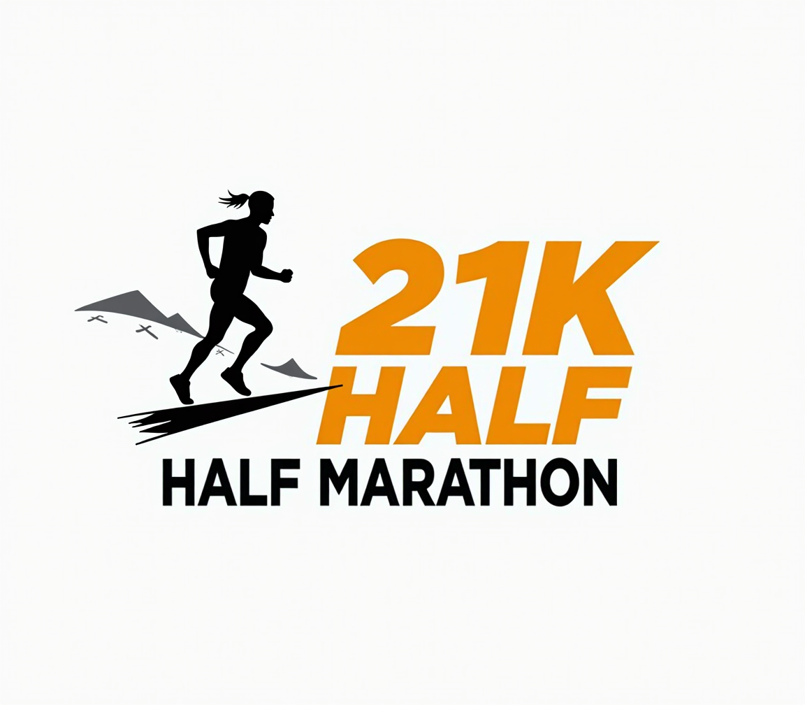

Half-Marathon, London, UK
13.1 miles of persistence, preparation, and mental resilience. Training alongside research taught me the value of discipline, time management, and pushing through discomfort. Grateful for the challenge and the reminder that consistent effort pays off — in science, sport, and beyond.
May 2024